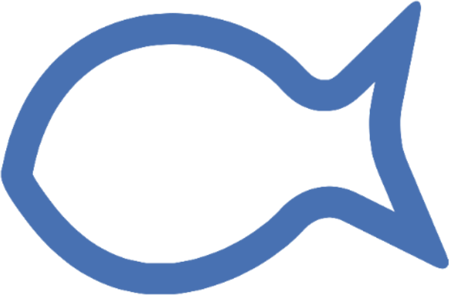
AQUÁRIO
Aquário: projeto e desenvolvimento de um hub
acadêmico open-source para o CI/UFPB
Sumário
- Introdução
- Conceitos Gerais
- Projeto e Especificação
- Metodologia e Implementação
- Resultados e Discussão
- Conclusão
1 — Introdução
O problema
O CI tem um ecossistema rico — laboratórios, grupos, ligas, projetos, oportunidades.
Mas o acesso a ele é fragmentado e dependente do acaso:
- apresentações na Semana da Computação
- convites informais no corredor
- perguntas em grupos de WhatsApp
Ferramentas úteis existem — SACI, mapas, calendário — mas isoladas, sem integração entre si.
O período inicial é crítico: o desconhecimento do ambiente institucional está entre os fatores associados à evasão nos primeiros semestres (VELOZO et al., 2025).
Quem perde com isso
Ingressantes
Chegam sem referências e descobrem tarde o que existe.
Veteranos
Desconhecem parte do que o próprio centro oferece e usam ferramentas fragmentadas.
O próprio Centro
Sem base viva e pública, não consegue apresentar nem manter memória do que produz.
Objetivo
Projetar, desenvolver, disponibilizar em produção e avaliar a adoção de uma plataforma web open-source de centralização e divulgação das informações do CI/UFPB.
Objetivos específicos
- Caracterizar o problema de visibilidade informacional no CI/UFPB;
- Projetar a arquitetura considerando escalabilidade, manutenibilidade e contribuição colaborativa;
- Implementar as funcionalidades centrais da plataforma;
- Estruturar o projeto como software open-source, com documentação, processo de contribuição e governança;
- Disponibilizar em produção e acompanhar a adoção pela comunidade.
Um site público que reúne as informações e as ferramentas do CI num só lugar — e que a própria comunidade mantém.
2 — Conceitos Gerais
Portais e sistemas de informação acadêmica
Sistemas de informação acadêmica são plataformas digitais que centralizam, organizam e disponibilizam informações relevantes para a comunidade universitária.
Um portal acadêmico vai além: é um ponto de acesso unificado que agrega serviços, informações e recursos para os diferentes perfis da comunidade (JAFARI; SHEEHAN, 2003).
Trabalhos relacionados
- Sistemas de gestão acadêmica (SIGAA e afins) — orientados a processos institucionais: matrícula, histórico, frequência. Função operacional; não se propõem a dar visibilidade ao que o centro produz.
- Páginas institucionais — sete cursos de computação consultados, em quatro regiões. Cinco publicam listagens estáticas; em duas não há listagem de laboratórios.
- City Tech OpenLab (CUNY) — o mais próximo internacionalmente, mas focado em pedagogia aberta.
- SIAC (UNIFESSPA) — o mais próximo no Brasil: sem dados de adoção, organizado por chatbot, e não é código aberto comunitário.
Inspeção por conveniência, não revisão sistemática — delimita o panorama consultado.
Onde o Aquário se posiciona
| Aquário | Páginas instituc. | City Tech | SIGAA | |
|---|---|---|---|---|
| Busca e filtragem do ecossistema | Sim | Não | Parcial | Não |
| Descrição detalhada de projetos | Sim | Não | Sim | Parcial |
| Ferramentas acadêmicas integradas | Sim | Não | Não | Sim |
| Acesso público sem autenticação | Sim | Sim | Parcial | Não |
| Código aberto e replicável | Sim | Não | Parcial | Não |
| Mantido pela comunidade discente | Sim | Não | Não | Não |
Fonte: elaboração própria (2026).
Software open-source
Software open-source é aquele cujo código-fonte é disponibilizado publicamente, permitindo que qualquer pessoa o inspecione, modifique e distribua (OSI, 2024). Estabelece uma cultura de colaboração em que o projeto pertence à sua comunidade, e não a um único autor.
Projetos bem-sucedidos compartilham características comuns (FOGEL, 2017):
- documentação clara;
- processos de contribuição definidos;
- versionamento rigoroso;
- uma comunidade engajada.
Desenvolvimento web moderno
Em projetos open-source universitários, o custo de entrada de um novo colaborador é fator crítico de sustentabilidade: a rotatividade é alta e o tempo de cada participante é reduzido. E quem escreveu cada parte raramente estará lá quando ela for alterada.
- Unificação de frontend e backend em um único repositório
- Disponibilidade de bibliotecas de componentes prontas
- Popularidade da tecnologia
- Linguagem de tipagem estática
- Implantação simples e sem custo
Convergem no Next.js + Vercel.
3 — Projeto e Especificação
Concepção
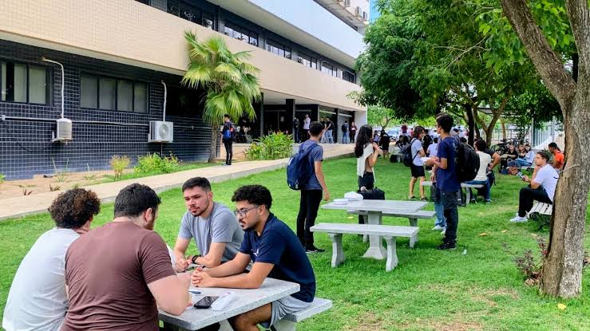
Perfis de usuários
Ingressantes
Ponto de partida para conhecer o CI — descobrir o centro antes mesmo de circular pelos corredores.
Veteranos
Ferramentas acadêmicas que existiam de forma dispersa, ou não existiam, reunidas em um único lugar.
Público externo
Potenciais alunos, empresas, pesquisadores — uma vitrine do que o CI produz e oferece.
Requisitos funcionais
11 requisitos.
Cada um representa um
módulo da plataforma.
- Entidades
- Projetos
- Guias
- Grades curriculares
- Minhas Disciplinas
- Calendário acadêmico
- Mapas
- Busca global
- Cadastro e onboarding
- Perfil de usuário
- Administração
Requisitos não funcionais
6 requisitos.
Cada um com uma meta
mensurável.
- Disponibilidade
- Eficiência de desempenho
- Segurança
- Manutenibilidade
- Acessibilidade
- Responsividade
Metas verificáveis, não apenas declaradas — é o que permite reprovar o próprio sistema.
Interface e identidade visual
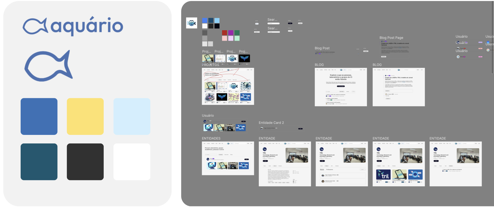
4 — Metodologia e Implementação
- Processo de desenvolvimento
- Stack tecnológica
- Arquitetura
- Modelo de dados
- Infraestrutura
- Instrumentação do analytics
- Testes
Recorte temporal — a data-base
3 de novembro de 2025 a 9 de junho de 2026 — 219 dias de observação.
Maio de 2026 traz a v1.8.0, a última release conduzida sob a liderança do autor. As versões posteriores indicam a continuidade do projeto sob outros mantenedores e não integram esta análise.
O primeiro commit do repositório é de 17 de julho de 2024, anterior ao início da coleta em produção.
Processo de desenvolvimento
Documentação e governança
aquario/
├── README.mdo que é o projeto e como rodar
├── README-DEV.mdambiente de desenvolvimento e convenções
├── CONTRIBUTING.mdcomo abrir PR, padrão de commit, revisão
├── CODE_OF_CONDUCT.mdconduta esperada na comunidade
├── SECURITY.mdcomo reportar uma vulnerabilidade
├── CHANGELOG.mdhistórico das 27 releases, em versionamento semântico
├── LICENSEMIT
├── REPLICANDO_NA_SUA_UNIVERSIDADE.mdguia para outro centro adotar o projeto
│
├── .claude/CLAUDE.mdcontexto do projeto para ferramentas de IA
├── .cursor/rules.mdas mesmas regras, em versão enxuta
└── .agents/skills/instruções reutilizáveis — fonte única
Tudo que um colaborador lê antes de escrever a primeira linha — a documentação é parte do artefato, não um anexo.
Processo de desenvolvimento
Integração e entrega contínuas
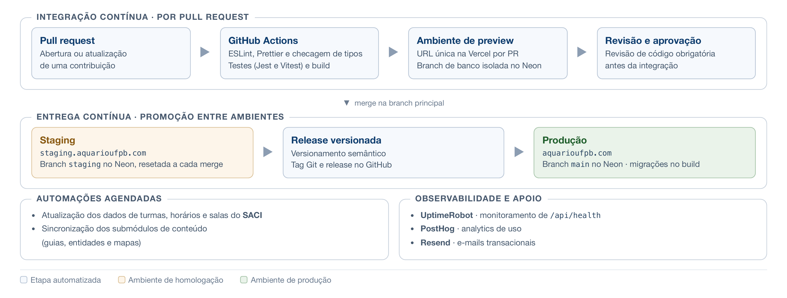
Stack tecnológica
| Função | Escolha |
|---|---|
| Aplicação |   Next.js 15 (App Router) + React Next.js 15 (App Router) + React |
| Linguagem |  TypeScript TypeScript |
| Hospedagem |  Vercel Vercel |
| Banco de dados |  PostgreSQL PostgreSQL |
| Banco gerenciado |  Neon — branch por pull request Neon — branch por pull request |
| Acesso a dados |  Prisma ORM Prisma ORM |
| Interface |  Tailwind CSS e shadcn/ui Tailwind CSS e shadcn/ui |
| Ambiente local |  Docker Docker |
Arquitetura
Monorepo
aquario/
├── src/
│ ├── app/App Router — páginas e rotas de serviço na mesma árvore
│ │ ├── entidades/ …páginas
│ │ └── api/rotas de serviço: entidades, projetos, auth, search…
│ │
│ ├── components/interface — pages/, shared/, ui/
│ ├── lib/
│ │ ├── client/roda no navegador — hooks e chamadas de API
│ │ ├── server/roda no servidor — repositórios, serviços, container de DI
│ │ └── shared/os dois lados — tipos, validação Zod, constantes
│ └── analytics/catálogo tipado de 37 eventos
│
├── prisma/schema, migrações e seed
├── content/conteúdo versionado — 3 submódulos e 3 pastas
└── .github/workflows/nove workflows de CI/CD
Arquitetura
Camadas e integrações
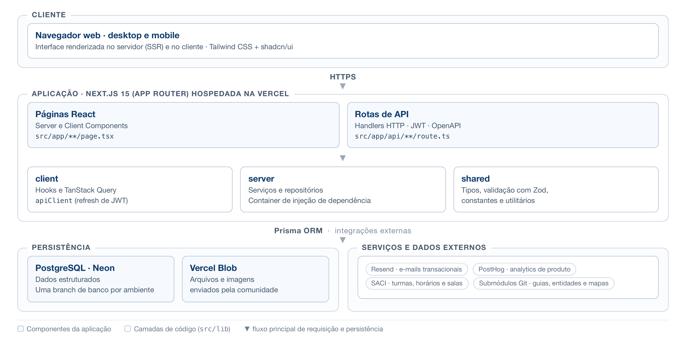
Modelo de dados — 23 tabelas, 9 enums
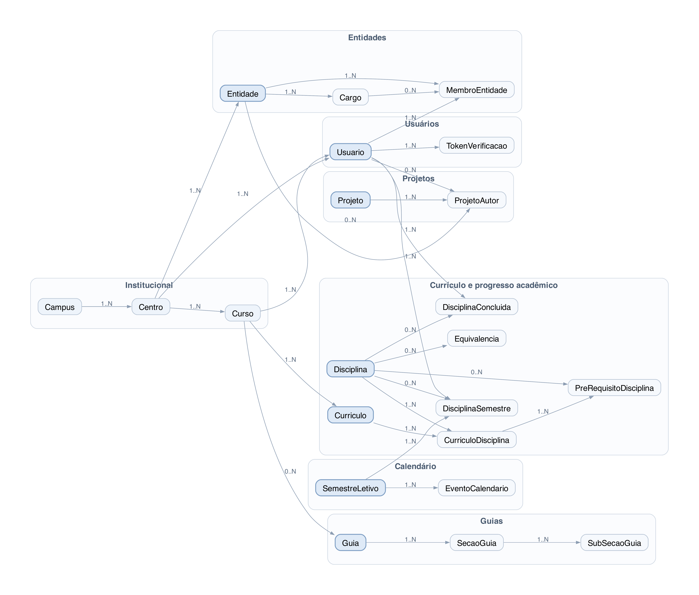
Infraestrutura
Quatro ambientes: local, preview por PR, staging e produção.
| Serviço | Papel |
|---|---|
| Neon | banco gerenciado, com branch isolada por PR |
 GitHub Actions GitHub Actions | nove workflows de teste, qualidade e deploy |
 Resend Resend | e-mail transacional — verificação de conta (RNF03) |
 PostHog PostHog | analytics de produto |
| UptimeRobot | monitoramento do endpoint de saúde (RNF01) |
| Scalar | documentação interativa da API |
Todos em plano gratuito na escala do Aquário. Único custo: o registro do domínio.
Instrumentação do analytics
Um catálogo de eventos tipado
A instrumentação foi tratada como parte do produto. São 37 eventos declarados em um catálogo único, com nome e propriedades verificados em tempo de compilação — um evento divergente não compila.
Os eventos acompanham fluxos, e não apenas telas: o onboarding registra separadamente a exibição, a conclusão e o salto de cada etapa.
Sobre esse catálogo é montado o painel público de métricas, com pouco mais de vinte visualizações — alcance, uso e permanência.
Instrumentação do analytics
O painel público de métricas
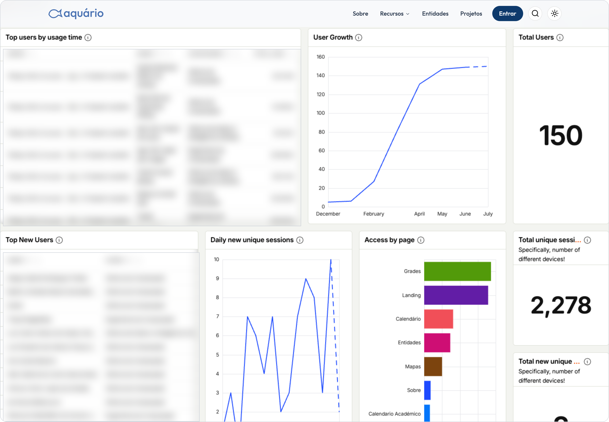
Testes
Jest para unidade e componentes, Vitest para integração. A cada contribuição o pipeline roda ESLint, Prettier e verificação de tipos.
5 — Resultados e Discussão
Entidades
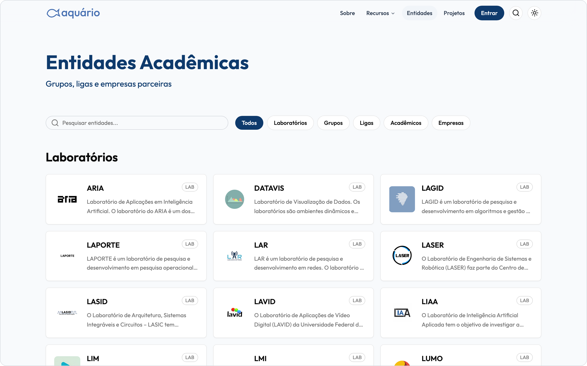
Entidades — página individual
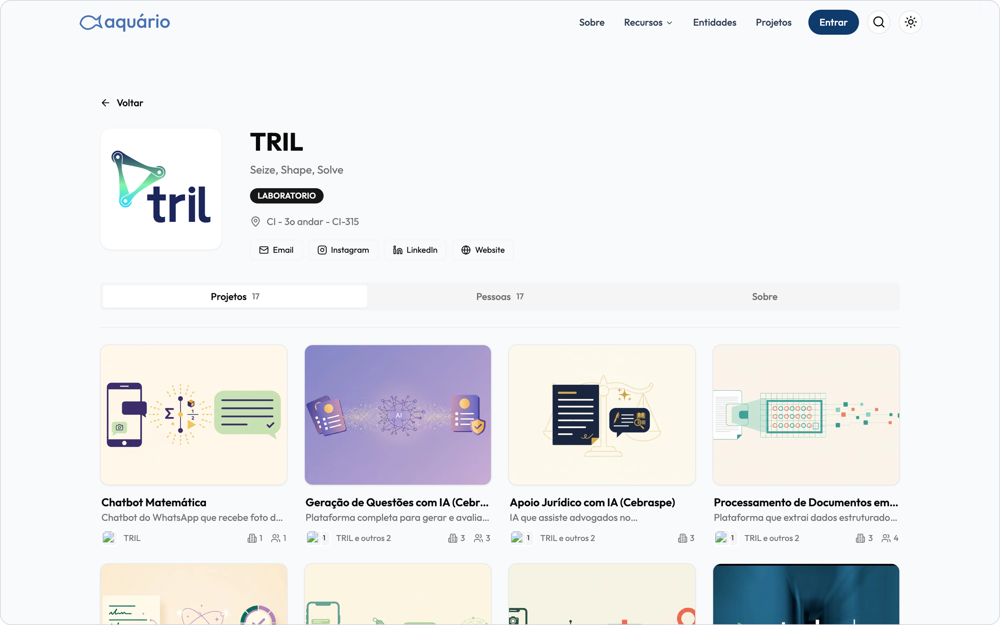
Projetos
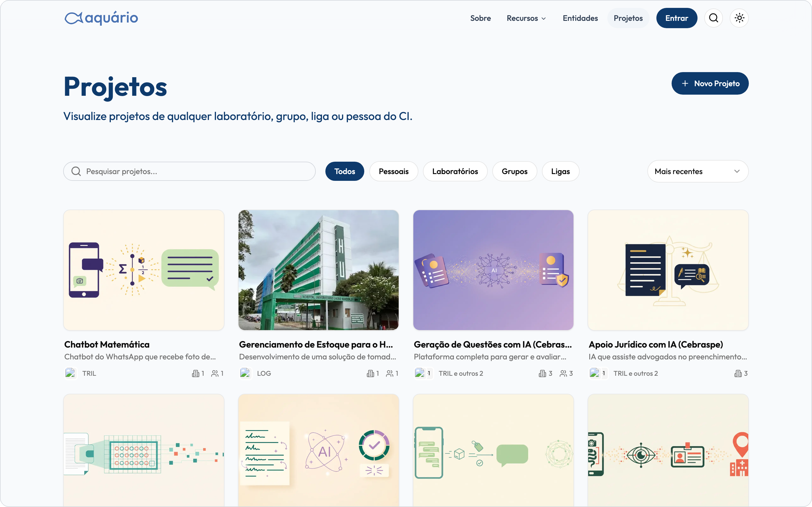
Guias
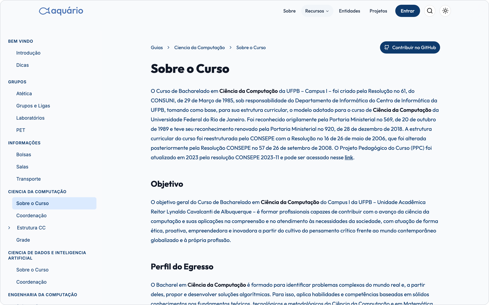
Grades curriculares
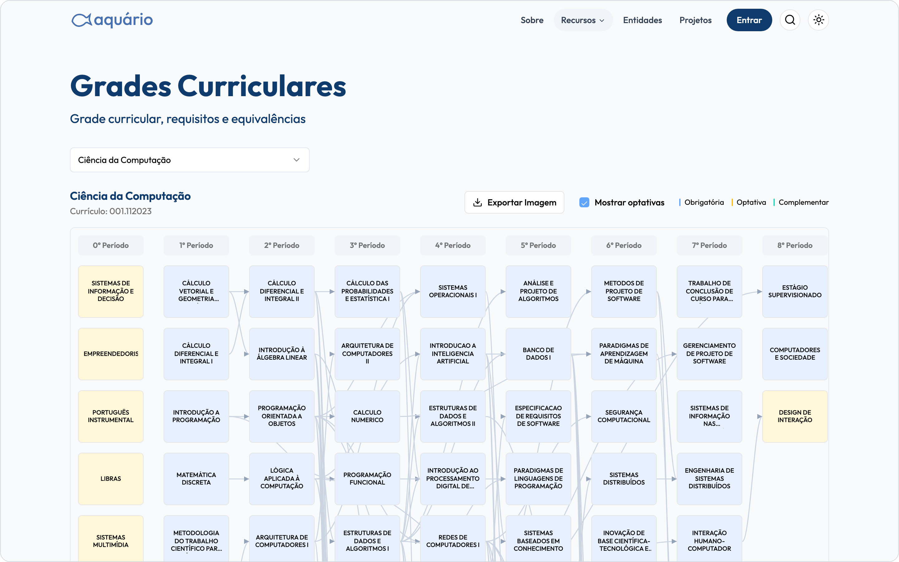
Minhas disciplinas
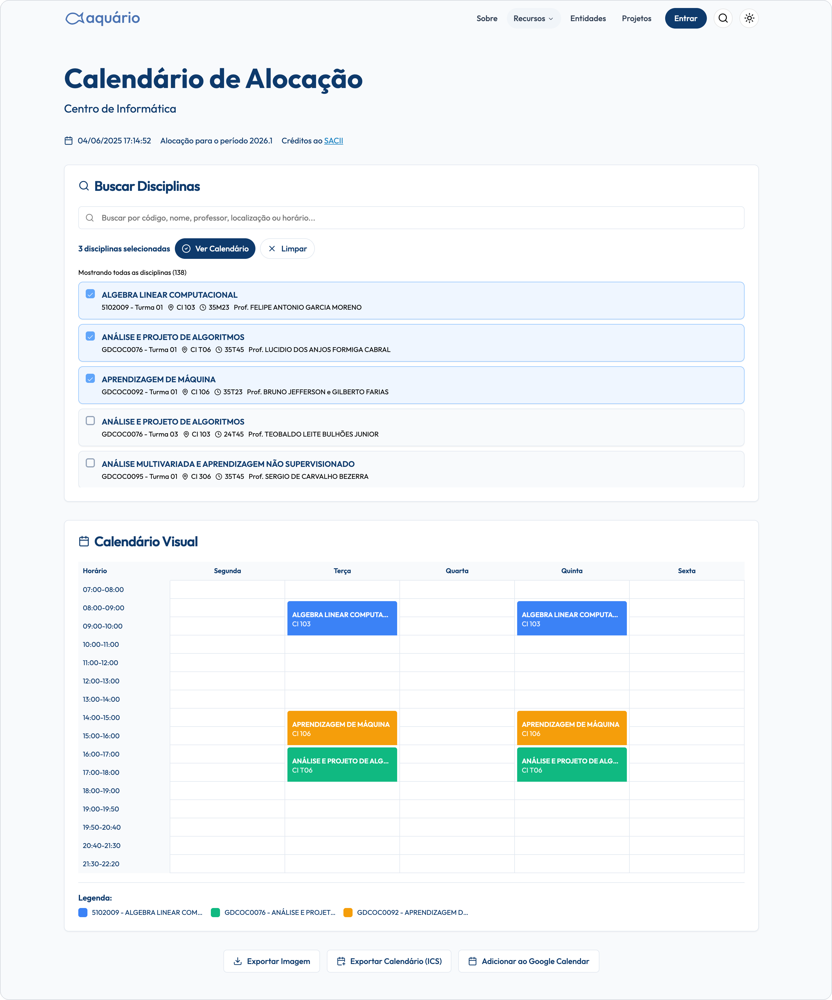
Calendário acadêmico
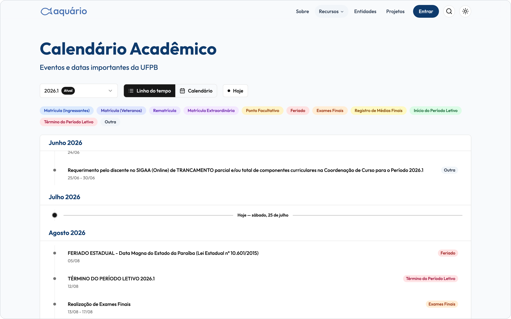
Mapas
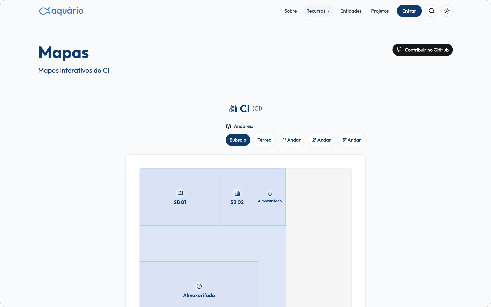
Perfil de usuário
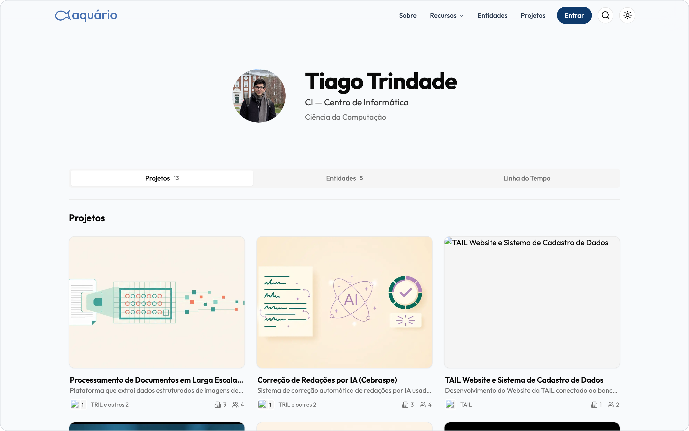
Administração
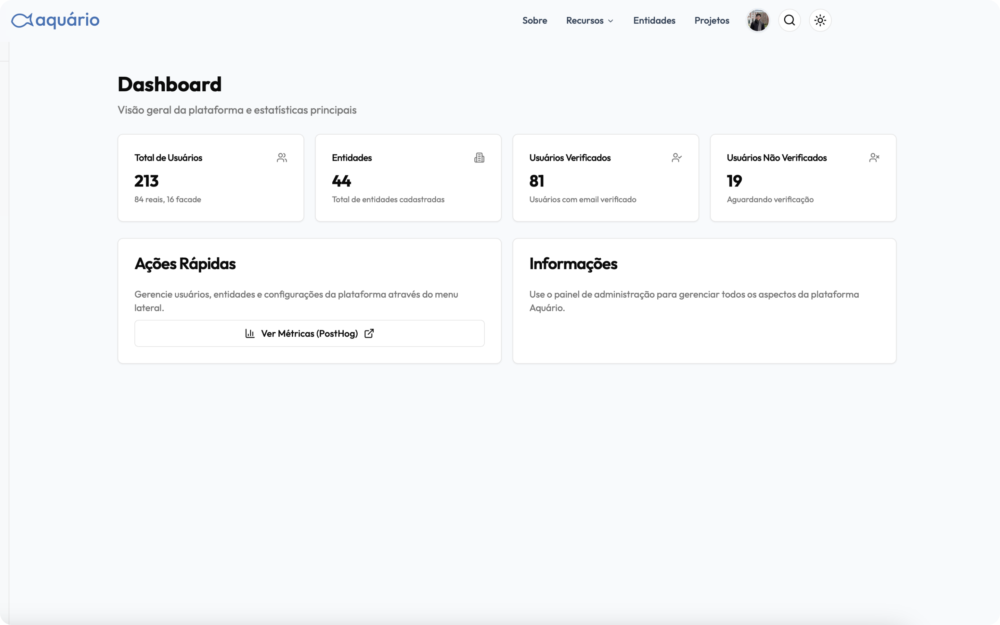
Está no ar
aquarioufpb.com
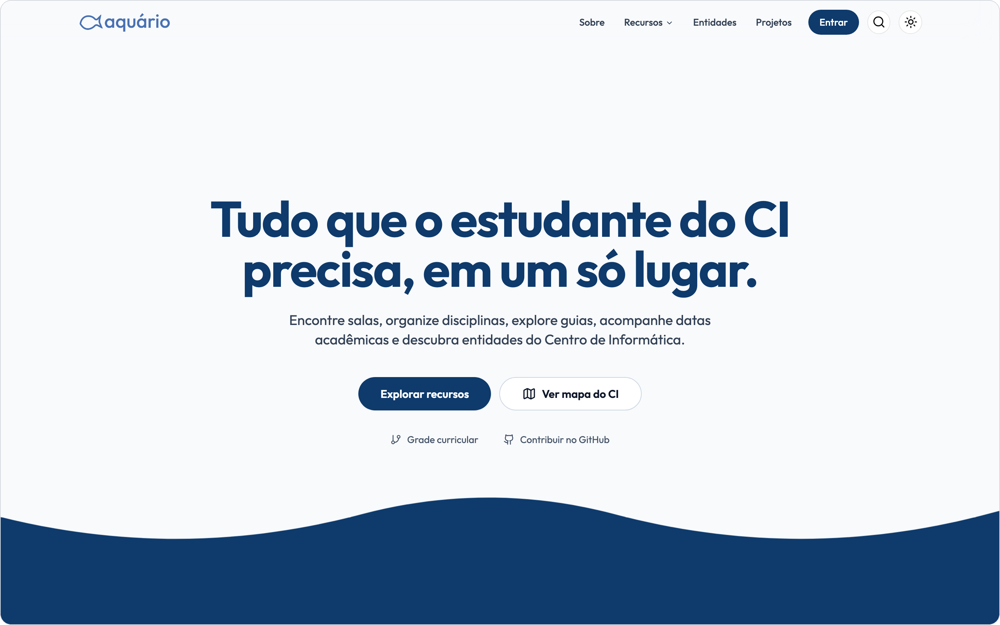
O acervo deixou de ser uma estrutura vazia
As 44 entidades cobrem laboratórios, grupos, ligas, empresas, centros acadêmicos e atlética — e todas receberam ao menos um acesso no período.
O resultado que mais importa
| Funcionalidade | Usuários | Registros |
|---|---|---|
| Calendário de turmas do semestre | 129 (82,2%) | 956 |
| Acompanhamento de grade curricular | 121 (77,1%) | 2.423 |
| Vínculo com ao menos uma entidade | 93 (59,2%) | 239 |
A maioria não apenas visitou: registrou dados pessoais de progresso acadêmico e organização do semestre.
Média de 20 disciplinas por estudante — e são etapas que podiam ser puladas com um clique.
Alcance
semana de pico
O pico coincide com o início do período letivo, em março. 86,3% dos acessos vêm do Brasil; João Pessoa é a cidade com maior volume.
Verificação dos requisitos funcionais
Cada requisito foi conferido por execução no ambiente de produção, e não por inspeção de código.
Onde cabia, incluiu-se o caso negativo — aquele em que o comportamento correto é recusar: cadastro com domínio não institucional → HTTP 400 · rota administrativa sem permissão → HTTP 401 · projeto em rascunho para visitante anônimo → não listado.
Verificação dos requisitos não funcionais
| Requisito | Meta | Situação |
|---|---|---|
| RNF01 Disponibilidade | ≥ 99% | Atendido (43 dos 219 dias) |
| RNF02 Desempenho | LCP 2,5 s · ≥ 90 | Desktop sim, móvel não |
| RNF03 Segurança | rotas autenticadas | Atendido |
| RNF04 Manutenibilidade | cobertura ≥ 70% | Atendido (78,83%) |
| RNF05 Acessibilidade | ≥ 90 | Parcialmente atendido |
| RNF06 Responsividade | 320–1920 px | Atendido |
Desempenho e acessibilidade por Google Lighthouse (WCAG 2.2) sobre produção: quatro páginas × dois perfis × três execuções, reportando a mediana. Disponibilidade por UptimeRobot, sondando /api/health; cobertura pelo relatório do Jest; segurança por requisição direta às rotas. Em móvel a pontuação ficou entre 67 e 75 nas quatro páginas, com LCP de 5,6 s a 13,0 s — deficiência sistêmica, não caso isolado.
Evolução do sistema
27 releases no período
fevereiro concentra dois terços
— estabilização e três minors
Comunidade

E o projeto seguiu sob outros mantenedores depois da minha saída.
6 — Conclusão
Considerações finais
O problema que motivou o projeto foi endereçado de forma concreta: o ecossistema do CI está reunido em um único ponto de acesso, em produção e em uso.
Acervo
Deixou de ser estrutura vazia: 157 contas e as 44 entidades do CI, todas com acesso registrado — a visibilidade não ficou restrita às já conhecidas.
Uso
A evidência mais forte não é o volume de acessos, e sim a maioria dos cadastrados registrando dados pessoais para acompanhar o progresso acadêmico: ação deliberada e persistente.
Colaboração
17 contribuidores e um ritmo de releases sustentado ao longo de todo o período — o projeto passou a receber contribuições da comunidade do CI, e não só da equipe que o começou.
Tecnicamente, o trabalho mostra que uma equipe universitária voluntária consegue construir e manter uma plataforma web moderna — e sustentá-la depois da saída de quem a começou.
O problema, agora
Ingressantes
Chegavam sem saber o que existia. Hoje descobrem o que há no centro, quem está em cada grupo e o que essas pessoas produzem — sem depender de conhecer alguém.
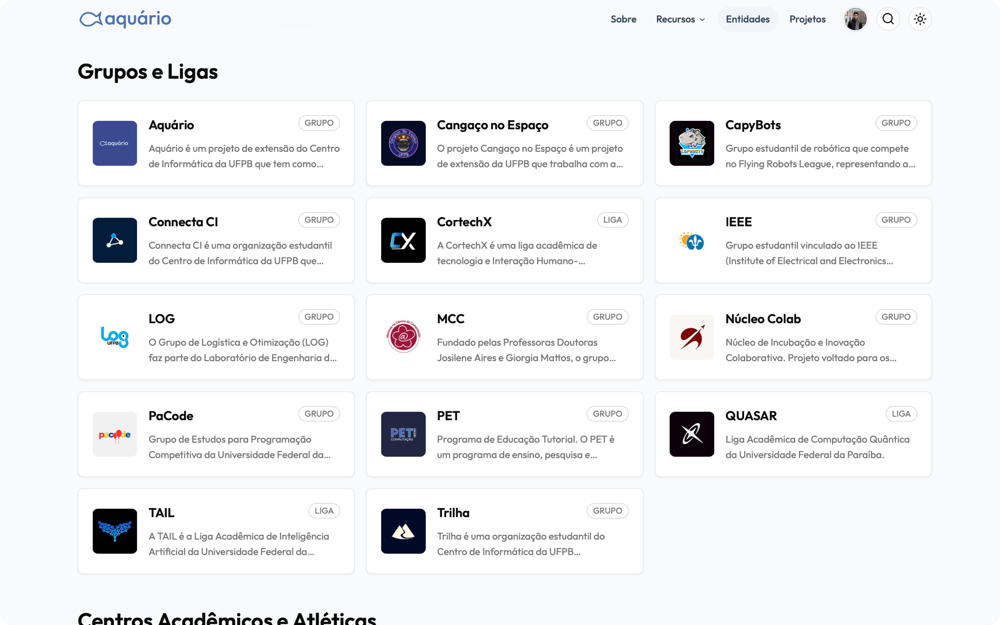
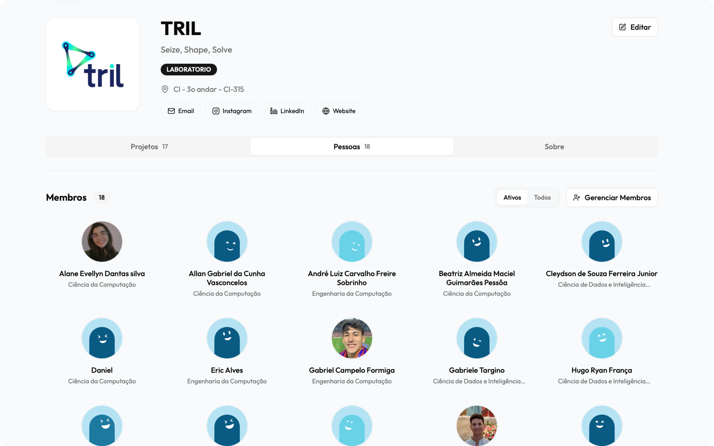
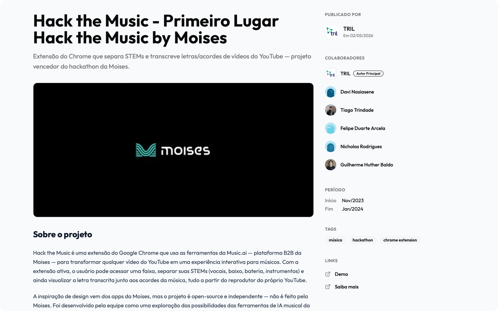
O problema, agora
Veteranos
Já conheciam o centro, mas organizavam o semestre com ferramentas dispersas — ou com nenhuma. As que faltavam agora existem, no mesmo lugar.
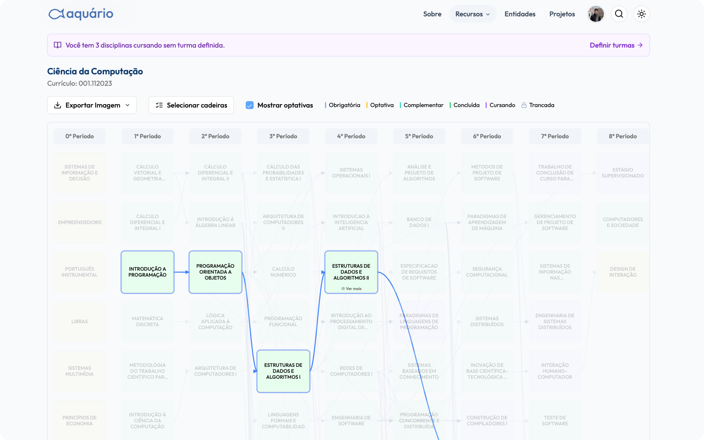
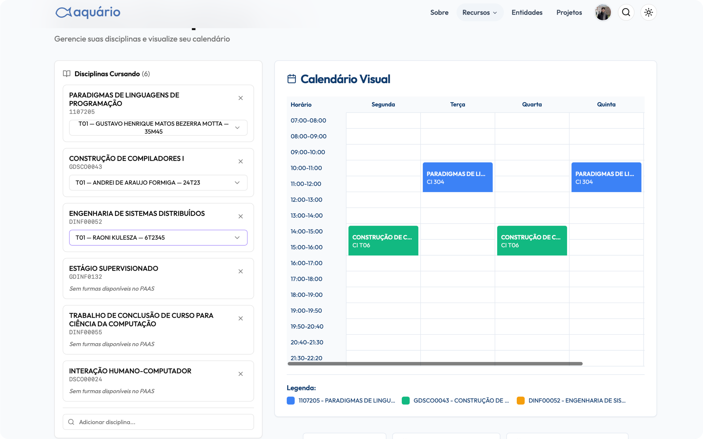
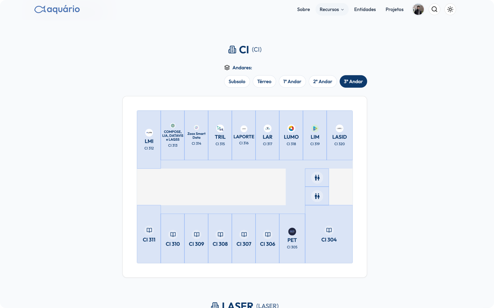
O problema, agora
Público externo
Não tinha por onde olhar. Hoje o que o CI produz — e com quem produz — é público e navegável por quem nunca pisou no centro.
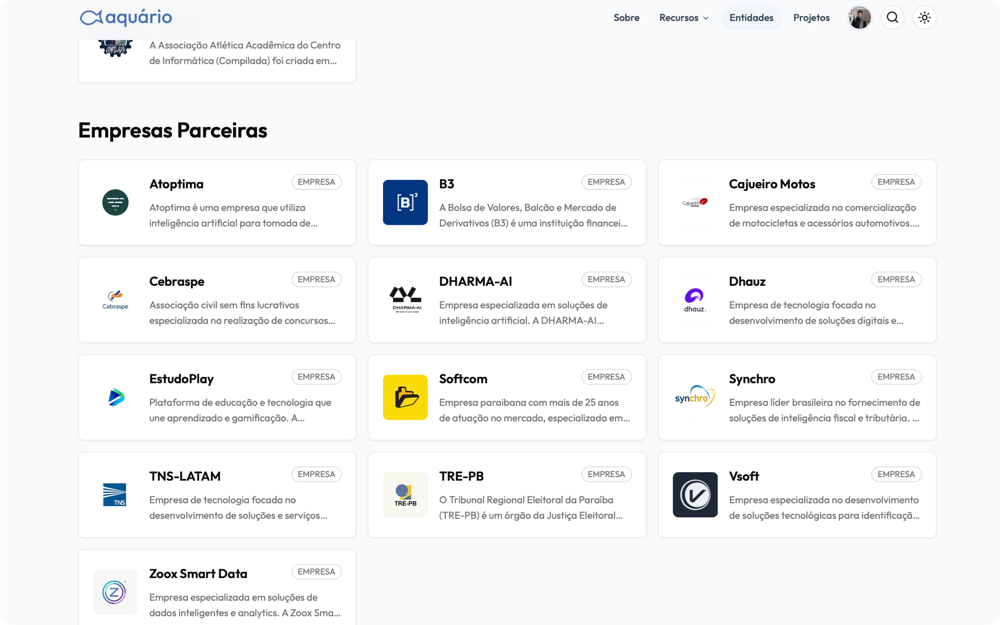
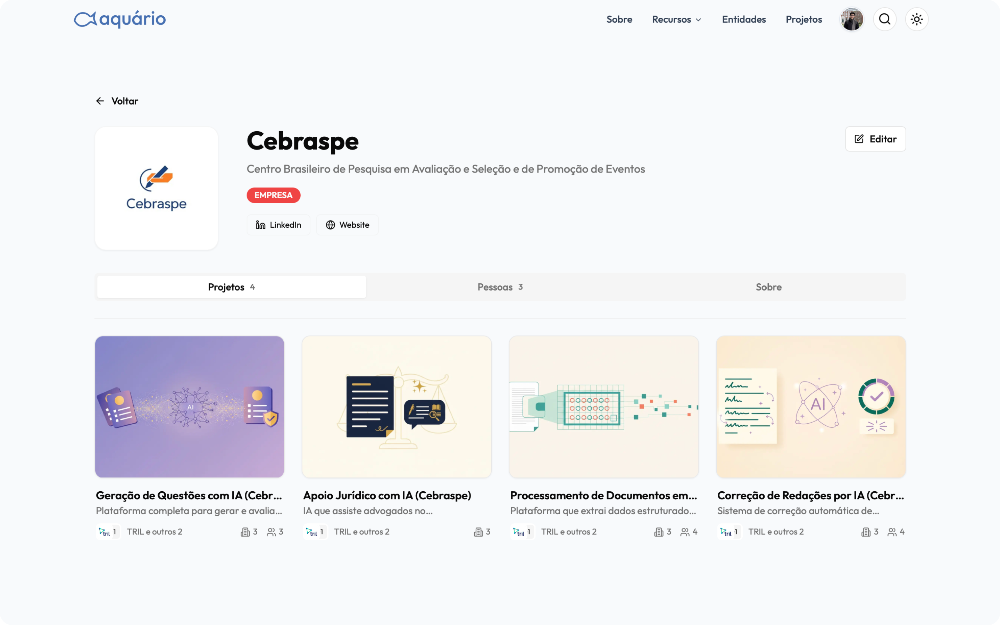
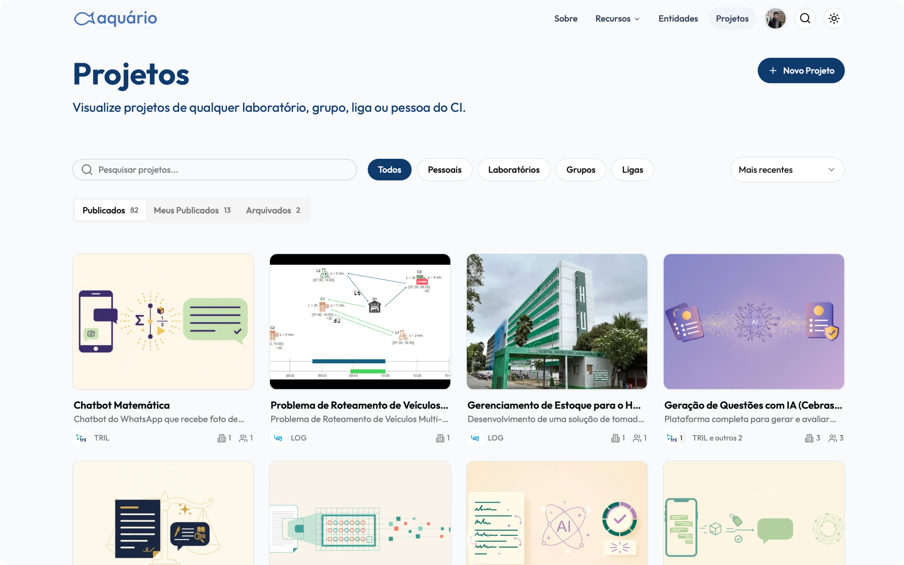
Limitações
- O problema foi caracterizado pela observação do autor, sem levantamento empírico junto aos estudantes.
- Avalia-se adoção, medida por uso efetivo — não usabilidade. Não houve SUS nem teste com usuários.
- O desempenho móvel é deficiência medida e não resolvida.
- A plataforma não publica política de privacidade nem termos de uso — o usuário não sabe quais dados são coletados nem por quanto tempo. Condição para adequação plena à LGPD.
Estudo de caso único: os resultados não são estatisticamente generalizáveis.
Trabalhos futuros
- Avaliação com usuários — questionário de caracterização e SUS. É a evolução de maior valor.
- Desempenho móvel — eliminar JavaScript não utilizado, revisar cache, meta de LCP em 2,5 s.
- Política de privacidade e termos de uso — condição para adequação plena à LGPD.
- Integração com o SIGAA — eliminaria o cadastro separado e o preenchimento manual do perfil.
- Expandir para a UFPB inteira — a estrutura de campus, centros e cursos já é genérica; o passo seguinte é abrir a outros centros além do CI.
- Apoiar a replicação em outras universidades — o guia já existe no repositório; falta acompanhar quem adota.
- Módulo de Vagas e expansão dos guias por curso.
O que fica
- Uma plataforma em produção, aberta sob licença MIT, com custo de infraestrutura zero.
- O ecossistema do CI visível e navegável — 44 entidades, todas acessadas.
- Um projeto que continua sem mim, mantido pela comunidade do próprio centro.
aquarioufpb.com
github.com/aquario-ufpb/aquario · MIT
Referências
- BRASIL. Lei n.º 13.709, de 14 de agosto de 2018 — Lei Geral de Proteção de Dados Pessoais. Brasília: Presidência da República, 2018.
- FOGEL, K. Producing Open Source Software: How to Run a Successful Free Software Project. Sebastopol: O'Reilly Media, 2017.
- GOOGLE. Lighthouse. 2026.
- JAFARI, A.; SHEEHAN, M. (org.). Designing Portals: Opportunities and Challenges. Hershey: IGI Global, 2003.
- MACHADO, G. et al. SIAC: Sistema de Apoio ao Calouro com Integração ao Chatbot MICA. In: SBSI, 2023.
- OSI. The Open Source Definition. Open Source Initiative, 2024.
- RAYMOND, E. S. The Cathedral and the Bazaar. Sebastopol: O'Reilly Media, 1999.
- SELIVON, M.; BEZ, J. L.; TONIN, N. URI Online Judge Academic: Integração e Consolidação da Ferramenta no Processo de Ensino/Aprendizagem.
- VELOZO, I. F. S. et al. Acompanhamento de Calouros em Sistemas de Informação: Integração e Suporte no Início da Vida Universitária. In: WEI, 2025.
- W3C. Web Content Accessibility Guidelines (WCAG) 2.2. W3C Recommendation, 2023.
Lista completa na monografia — 39 referências.
Obrigado
Perguntas